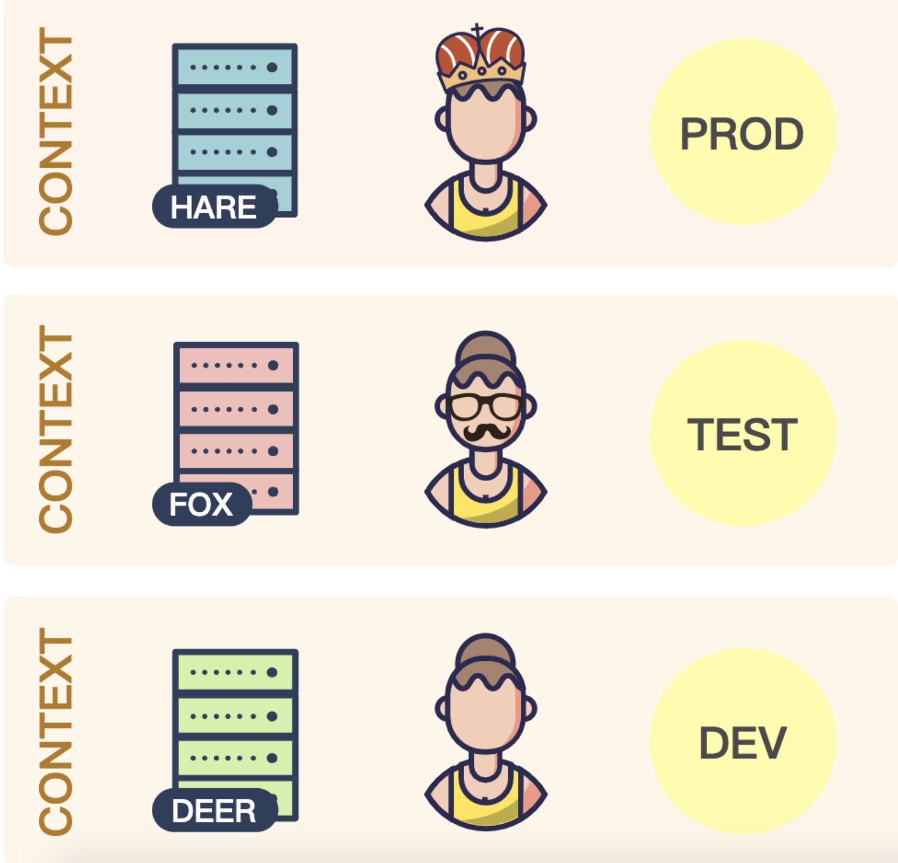

[K8S] kubectx多叢集間切換自如 | A tool to switch between Kubernetes contexts
Status: in 75%
Agenda
前言
多組K8s叢集管理，需要注意的重點有二件事，第一就是叢集(cluster)切換，不可或缺的工具有kubectx, kubens，有了它們就能輕鬆在多個背景及命名空間之間做轉換。在真正使用之前，我們先了解一下在之前，切換叢集需要關系的元件有那些，因此會介紹context, kubeconfig
如果你需要更深入轉換整個kubernetes系統時，你可以參考以下工具(以下非本文的主軸)
[Rancher](https://rancher.com/)是以UI 介面出發來集中管理多重叢集，它可以設定穿越地端與多組雲端託管的kubernetes[KQueen](https://www.notion.so/huangdaxian/Istio-K8s-Istio-Anthos-Shared-Control-Plane-in-Multi-Cluster-65d393869c014da98aed614afa98af14)是open source 是由Mirantis員工所開發，提供一個共用型的自助式kubernetesGrandener是由SAP公司所開發，多是利用kubernetes 原生API建構
什麼是Context
- 它是一個設定檔，位置存在於
$HOME/.kube/config - 設定檔的功能包含以下
namespace使用控管- 如何驗證叢集
- 告知server, client 有那些
其實context = kubeconfig，一個 context 裡面必需要三個元件分別是
這三個東西說起來也很直觀，有個使用者 (User) 必須要有憑證 (Certification) 才能連到某個 Cluster (Serve)，因此配置完 kubeconfig，如此 kubectl 才會知道要進行存取的 k8s cluster 位於何處
- User
- Server
- Certification
photo by Akiicat 學習筆記
什麼是kubeconfig
我們可透過 kubeconfig 了解以下資訊：
- 存取的 k8s cluster 進入點為 context，透過設定
current-context可以指定 kubectl 操作時預設的 context - 使用者可以自訂多組的 cluster/user/context 並隨意搭配出不同的 context 組合，藉此存取多組 k8s cluster
- 範例包含設定兩組 context，分別是
gke&onprem-connect - 若要使用 kubectl 直接對
不同的 context進行存取，可在命令中加上-context [CONTEXT_NAME]來動態變更，只要相對應的憑證有設定正確就能切換至不同的叢集

kubeconfig 切換叢集應用
在管理kubernetes時，我們常用以下指令，來取某個 Kubernetes 的 cluster
1kubectl config use-context #命令快速在叢集之間進行切換比如現在現有三個叢集如下prod, test, dev，現在要從
prd切到test
kubeconfig 結構
kubeconfig文件由一組上下文組成。上下文包含以下三個主要元素
叢集(cluster)：叢集的API Server的URL
使用者(user)：叢集的特定使用者的身份驗證憑證
命名空間(namespace)：連接到叢集時使用的命名空間
其中
certificate有以下四種表示(參考下面參數)
1 | - cluster: |
2 | - certificate-authority-data: #cluster |
3 | - certificate-authority: /Users/joe.huang/.minikube/ca.crt #cluster |
4 | |
5 | - client-certificate: /Users/joe.huang/vagrant-cores/artifacts/tls/admin.pem #user |
6 | - client-key: /Users/joe.huang/vagrant-cores/artifacts/tls/admin-key.pem #user |
範例為連接GCP GKE kubeconfig檔
其中連結二個GKE叢集，config也包含
cluster,certificate等資訊
Kubectx 解決了什麼
- 縮短指令長度：過去切換叢集，我們使用原生
[kubectl config use-context minikube](https://www.akiicat.com/2019/04/24/Kubernetes/setup-kubernetes-configuration/)，現在使用更簡短的方式kubectx minikube - 懶人設定：像是查詢linux history，可以加上!編號，可以直接運行歷史指令。
kubectx -是直接紀錄上次切換過的叢集 **alias 支援**：這點是因為在cluster naming時候，常用很多的代稱去命名cluster，可能有場景、地區、機房，到最後 cluster可能長這樣gke_ahmetb-samples-playground_europe-west1-b_dubli，如果有kubectx，就可以這樣用
1 | kubectx eu=gke_ahmetb-samples-playground_europe-west1-b_dublin |
2 | kubectx eu #最終只需這樣跑 |
kubectx 用法
1 | USAGE: |
2 | kubectx : list the contexts |
3 | kubectx <NAME> : switch to context <NAME> |
4 | kubectx - : switch to the previous context |
5 | kubectx -c, --current : show the current context name |
6 | kubectx <NEW_NAME>=<NAME> : rename context <NAME> to <NEW_NAME> |
7 | kubectx <NEW_NAME>=. : rename current-context to <NEW_NAME> |
8 | kubectx -d <NAME> : delete context <NAME> ('.' for current-context) |
9 | (this command won't delete the user/cluster entry |
10 | that is used by the context) |
11 | kubectx -u, --unset : unset the current context |
kubectx 切換叢集, 使用別名
step1. 準備cluster
- 這邊先準備二個 K8s叢集在GCP雲端上，分別為
gke,onprem-connect - 至於安kubectx，這邊就不說明，有興趣朋友請至Github.com/ahmetb/kubectx
step2. 使用別名並切換叢集
1 | # switch your context to the gke cluster |
2 | |
3 | kubectx gke=gke_${PROJECT_ID}_us-central1-b_gke # 使用別名 |
4 | kubectx gke # 切換叢集 |